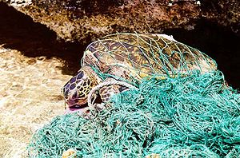

明天(6月8日)是世界海洋日，此環境節日於1992年由加拿大政府在里約熱內盧舉辦地球高峰會議時提議。在海洋計畫團體(Ocean Project)和世界海洋網絡(World Ocean Network)的推動下，聯合國大會於2008年12月正式議通過，每年6月8日為世界海洋日。世界海洋日成了一年一度為了慶祝人類與海洋之間的聯繫的國際慶典。上百家來自於五十幾個國家的水族館，動物園，博物館，保護組織，國立保護區，政府機關及人民一同響應。
今年世界海洋日的主題為「海洋生命Oceans of Life」，希望喚起人們對海洋生物多樣性的認識，透過選出自己喜愛的海洋生物，並一起行動來保護他們，本報將今日刊出賴鵬智日前翻譯的「海洋九大危機」作為開場，讀者透過這份由國外網路媒體Huffinton Post整理的報導，將可對全球海洋環境整體狀況有個初步的圖像；專題後續文章，編輯們也將關注台灣面臨的海洋環境問題與行動。
一、過漁 Overfishing
許多海洋學家認為過漁（過度撈捕）是人類對海洋最壞的影響。聯合國糧食及農業組織估計全世界超過70%的魚種已經被撈光、枯竭。撈捕的速度快過魚類繁殖生長的速度，我們已嚴重危害整個海洋生態系，無論是掠食魚種或是被掠食的魚種，牠們之間的食物鏈關係已經被破壞。這樣的損傷使得其他的干擾（如污染）更容易威脅海洋生態系。為了永續海洋資源，必須有一個全面翻修的漁業政策，這就須要全世界各國通力合作才行。
二、沒良心的養殖漁業 Irresponsible Fish Farming
野生漁獲減少，水產養殖業就更形發達。理論上養殖漁業是個好主意，但因為不當的經營管理導致許多負面的結果。養殖飼料、水產糞便、化學藥品（譯按：如抗生素、消炎藥、清潔劑）都很容易流進開放的大海而影響海洋生態。養殖的魚也有可能在不經意間流入海洋而有嚴重影響，例如消滅原生族群、傳播疾病及破壞棲地等。不幸的是，想要克服這些問題卻很不容易，因為供應全球將近50%魚貨的養殖漁業在目前並沒有很好的管制。
三、幽靈撈捕 Ghost Fishing
遺失或丟棄的漁具在海中繼續纏捕魚類或其他海洋生物稱之為「幽靈撈捕」（或譯「幽靈漁撈」），是對海洋生態極大的傷害。這種情形往往造成連鎖問題，例如小型生物被廢棄漁具纏住，大型掠食生物前來捕食，卻也一起被纏住。漂流的漁具也可能被捲進螺旋槳而損害船隻。現在有許多解決辦法被提出，例如以生物可分解的材質製造漁具，或像南韓政府收購老舊的漁具，鼓勵漁民更新（對海洋生態較友善的）魚具。
四、垃圾 Garbage
這是明顯易見的問題。真是令人驚訝這些垃圾是如何倒進大海的。海洋生物很容易被人類的垃圾纏住或困住，美麗的珊瑚與海綿也會被摧毀。更甚者，塑膠袋會被海龜或海豚視為牠們最喜愛的食物-水母或魷魚而吞食，造成牠們窒息或阻塞消化系統。如果您認為這樣還沒什麼，那麼在太平洋有一個比美國德州面積更大的垃圾漩渦及另一個規模稍小一點的位在大西洋，就應該是個警鐘了吧！
五、酸化 Acidification
海洋吸收了地球將近1/3的二氧化碳，讓地球可以不那麼熱但也使得海洋表面更酸。但這樣也限制了珊瑚、浮游生物及其他海洋生物利用碳酸鈣製造骨骼或保護用的外殼（譯按：這部分道理請參閱2010年2月9日科學月刊「二氧化碳濃度與海水酸化」或是2008年12月7日中國時報B4/科學周報「海水升溫+酸化 珊瑚遭『雙殺』」）。工業革命後海洋酸化程度增加25％，如果以這樣的速度繼續酸化下去（譯按：就是人類繼續大量排放二氧化碳），許多海洋生命將因此消逝。
六、優養化 Dead Zones
海洋「死亡區」（Dead Zones或譯「死亡地帶」）是因為海床缺氧造成生物無法生存，這些區域往往在大河出海口處，因為河水帶來人類產生的太多「營養」，優養化造成的。缺氧會殺死許多生物及破壞整個棲地。依照目前河川優養化速度，在 21世紀結束前，海洋死亡區將增加五成。（譯按：車輛排放的廢氣、家庭與事業廢污水、農業化肥或有機肥等排入河口，在海灣形成大量的氮或磷，超越海水可以代謝自淨的能力。氮磷的養分讓海藻大量繁殖，許多藻類有毒，加上大量吸收水中氧氣導致其他生物缺氧而死。而死去的藻類沈到水底，在腐爛的過程中又吸光了海底的氧氣，周遭生物完全不能存活，因此稱為「死亡區」。）
七、水銀污染 Mercury Pollution
科學報告指出海洋的水銀（汞）含量在過去20年間增加了30%，而且在往後數十年將再增加50%。燒煤的火力發電廠是罪魁禍首（譯按：火力發電廠會排放大量的汞廢氣）。水銀透過食物鏈傳遞（譯按：並有累積放大效應），最後人類吃魚也吃下水銀。水銀是一種神經毒素，會使胎兒大腦發育不正常，也會在往後造成學習障礙。
八、海上鑽油 Offshore Drilling
海上鑽油一直是個爭議，但顯然的只要石油持續開採，就會加劇對海洋的傷害。使用石化燃料會使海洋更熱而且更酸，但海上鑽油帶來的危機不只如此。當石油從海底被往上汲取時，連帶會有許多重金屬如汞、砷、鉛等都被提出來。同時偵測油源的震波也對海洋哺乳動物造成傷害或使鯨豚驚慌失措。2008年全球最大石油業者艾克森美孚公司就是使用震波科技時導致100隻鯨擱淺。而運輸油料的基礎設施會造成海岸侵蝕，則又是另一個問題了。（譯按：其實本文沒有提及另一嚴重問題，就是意外發生時，石油流洩污染海洋的夢魘。）
九、取鯊魚翅及捕鯨 Shark Finning / Whaling
摧殘海洋重要的掠食動物的結果就是破壞食物鏈。每年有5千萬至1億條各種鯊魚被殺，包括因為混獲被抓（譯按：「混獲」意為原來撈捕對象不是牠們卻同時被捕）或就是要抓牠們取魚鰭，用來煮亞洲地區昂貴卻又受歡迎的湯（譯按：就是華人喜歡吃的「魚翅湯」）。鯊魚被割下鰭後，就被扔回海裡（譯按：因為其他部位沒啥價值且佔倉儲空間），活生生的流血殆盡而亡。鯊魚的繁衍速度很慢（譯按：如雌大白鯊必須到十二歲才有繁殖能力），而且繁殖量不大。於是捕殺鯊魚會有長程影響，導致海洋生態系的失衡。另一件可惡的事是無視於1986年國際商業捕鯨禁令，一些國家如日本則鑽國際法規漏洞及遊說放鬆管制，而持續捕鯨中。（譯按：日本以科學研究名義大量捕鯨，鯨肉則流進市場，供日本人取食，並以大量金錢收買弱小國家在國際會議贊成開放商業捕鯨。）